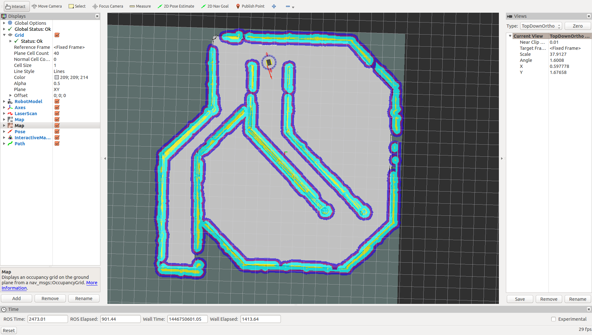
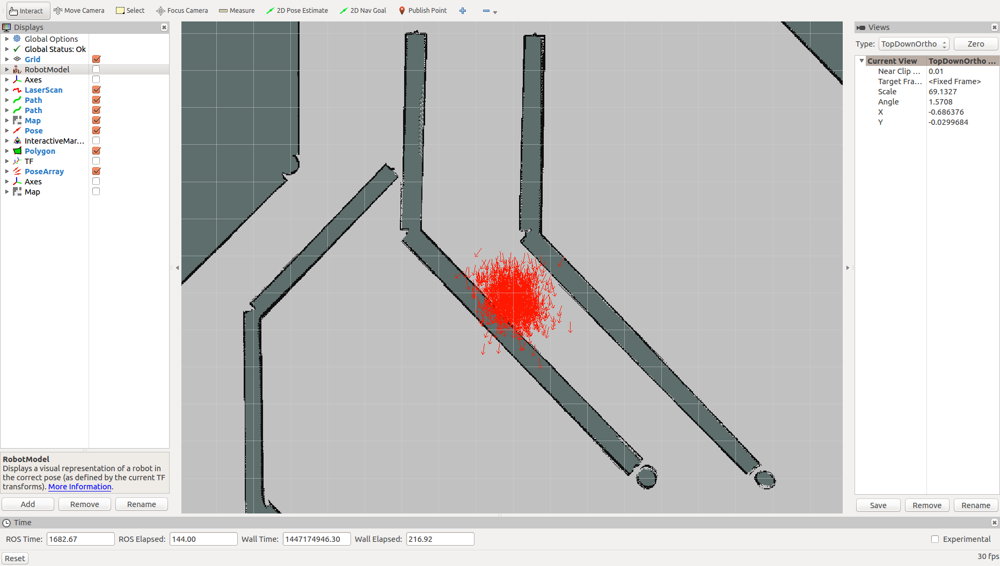
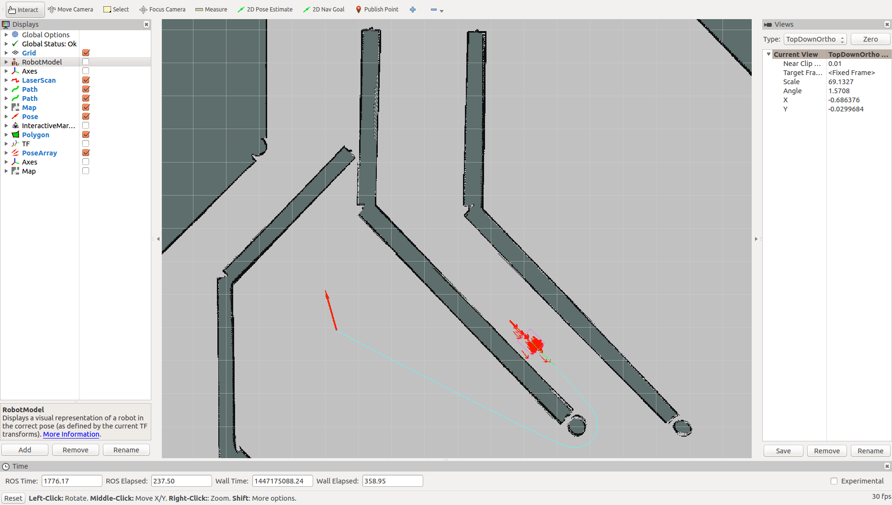
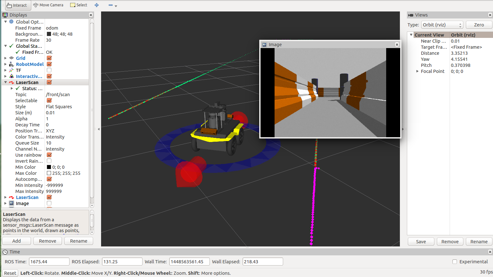

ROS Navigation Basics¶
If you’ve worked with ROS and robotics, you’ve probably heard of gmaping, localization, SLAM, costmaps and paths, but what does all this mean? They are more than just robot buzz words; these allow a robot to get from one point to another without bumping into obstacles, and in this tutorial, we’ll be covering some of the key concepts in what makes up an autonomous robot.
For this tutorial, we’ll be using Clearpath’s Jackal simulation in ROS Indigo. If you’ve never used ROS before, or don’t have ROS Indigo installed on your machine, check out the ROS wiki to get started.
Getting Started¶
We’ll begin by installing Clearpath’s Jackal simulation, desktop, and navigation packages.
sudo apt-get install ros-indigo-jackal-simulator ros-indigo-jackal-desktop
In addition, we’ll need the Jackal navigation package, but instead of installing the debians packages with apt-get, we’ll create a sourced workspace so we can make changes to some of these files and see how it effects our simulation. For a full explanation on creating and compiling a sourced workspace, check out our Creating a Workspace & Package tutorial, but for the purpose of this tutorial, here is a series of commands that’ll clone the jackal_navigation package (and a few others) into a sourced workspace.
cd ~
mkdir -p jackal_navigation/src
cd jackal_navigation/src && catkin_init_workspace
git clone https://github.com/jackal/jackal.git
git clone https://github.com/jackal/jackal_simulator.git
git clone https://github.com/clearpathrobotics/LMS1xx.git
git clone https://github.com/ros-drivers/pointgrey_camera_driver.git
cd ..
catkin_make
{kind=link}
The Jackal_navigation package simply contains configuration files in the params directory, and launch files to load these parameters and launch certain packages in the ROS navigation stack. The navigation stack is where the real magic happens when it comes to navigating with a ROS robot. Let’s begin by launching our Jackal simulation with a simulated laser.
source ~/jackal_navigation/devel/setup.bash
roslaunch jackal_gazebo jackal_world.launch config:=front_laser
When you can’t use a real Jackal, Gazebo is the next best thing! This simulation provides us with odometry and scan data, which is all we need to get Jackal driving around on it’s own! In a new terminal, source your jackal_navigation workspace and launch odom_navigation_demo.launch.
source ~/jackal_navigation/devel/setup.bash
roslaunch jackal_navigation odom_navigation_demo.launch
This launch file launches the move_base package. move_base allows Jackal to try to reach a goal simply with laser and odometry data.
We’ll begin our navigation tutorial by first building a map of our Gazebo world using the gmapping.launch file in the Jackal navigation package in another terminal, remember to source your workspace!
source ~/jackal_navigation/devel/setup.bash
roslaunch jackal_navigation gmapping.launch
If you’re familiar with ROS launch files, I’d encourage you to take a look here, otherwise, you can check out our tutorial on launch files here. This launch file is simply starting the gmaping package and setting several of the gmapping parameters which are described on the gmapping ROS wiki page. In a new terminal, open up Rviz using the Jackal’s gmaping configuration.
source ~/jackal_navigation/devel/setup.bash
roslaunch jackal_viz view_robot.launch config:=gmapping
{kind=link}
Take a look around and get familiar with all the different displays on the left side of the window. Notice there are two maps. One is visualizing the /map topic, which is what is being built from the gmapping demo as the robot moves around. If you click the check box beside the other map, you can now see the costmap from /move_base/global_costmap/costmap. The costmap is responsible for the inflation around obstacles to account for the footprint of the robot; the larger the inflation radius, the further the robot will keep away from these obstacles.
Before we start mapping, let’s add another view to our Rviz visualization. Click Add in the bottom left, and look for /move_base/NavfnROS/plan and click Path. This lets us see what Jackal is thinking! It’ll show you the path Jackal is going to attempt to use to reach its goal, and you’ll be able to see it change in real time.
Mapping¶
Now it’s time to start mapping! Using the tool bar on the top of the Rviz window, send 2D Nav Goals to Jackal. As it drives around, more of the map will be discovered. Also notice the path and how it changes as Jackal finds obstacles.
{kind=link}
Localization¶
Once you’re happy with the map you’ve made, go ahead and save it using
rosrun map_server map_saver -f jackal_world
This will create a map file in your current directory called jackal_world, which we will use in our AMCL demo. Go ahead and terminate all of the ROS terminals using CTRL-C. Then launch the simulator once again, the AMCL demo with the map we just created, and Rviz with our localization config, all in separate terminals. If you closed the windows, you’ll need to source your terminals again.
roslaunch jackal_gazebo jackal_world.launch config:=front_laser
roslaunch jackal_navigation amcl_demo.launch map_file:=jackal_world.yaml
roslaunch jackal_viz view_robot.launch config:=localization
For the purpose of this demonstration, I recommend hiding the Robot Model and Axes, and showing the Pose Array using the check boxes on the side. The red arrows around Jackal are the poses Jackal could be, based on a Monte Carlo localization estimate. This takes in scan data and transforms, and evaluates that data against the map we recorded previously to try to determine where it is within the Jackal world.
{kind=link}
If you give Jackal a 2D nav goal, you can see how the pose array gets much more refined, as the system takes in more information about its surrounding, and rules out possible poses.
{kind=link}
Another important tool is the 2D pose estimate. You can assist Jackal in localization by giving it a rough idea of where it should be in the map. You’ll notice that the pose array will get populated in the general area of a 2D pose estimate, and once again gets refined as it eliminates poses.
Customization¶
Now that’s we’ve covered some of the basics, let’s bring in a fully loaded Jackal to play with.
There is a custom_example.urdf file in the urdf folder. I’d encourage you to check out this file for yourself, and see if you can tell what sensors are being added to Jackal and where!
Once you’re ready to actually launch this suped-up Jackal, set the JACKAL_URDF_EXTRAS parameter to the file path to this custome_example.urdf file.
export JACKAL_URDF_EXTRAS=~/jackal_navigation/src/jackal/jackal_description/urdf/custom_example.urdf
From there, source your terminal and simply launch the Jackal simulation as you normally would.
source ~/jackal_navigation/devel/setup.bash
roslauch jackal_gazebo jackal_world.launch
You should now see a fully loaded Jackal! There are 2 bumblebee cameras angled downwards on the front and the back, 2 LIDARS scanning forwards and backwards, and there is a pointgrey camera giving us an image directly in front of Jackal.
From here, you can open up any of the demos we used earlier, or go straight into Rviz to visualize our new sensors.
roslauch jackal_viz view_robot.launch
At this point, I invite you to play around with these new sensors and try adding them into Rviz so you can see the different images from the cameras.
{kind=link}
If you really want to get adventurous, try changing some of the navigation parameters in the jackal_navigation launch files. You could also try mapping different Gazebo worlds using the many that are available online, or even making your own!
This tutorial merely scratched the surface of the ROS navigation packages, but I hope this helped you understand some of the basics concepts, and get you started exploring ROS navigation for yourself!